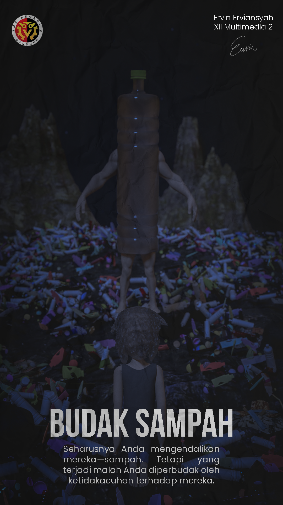
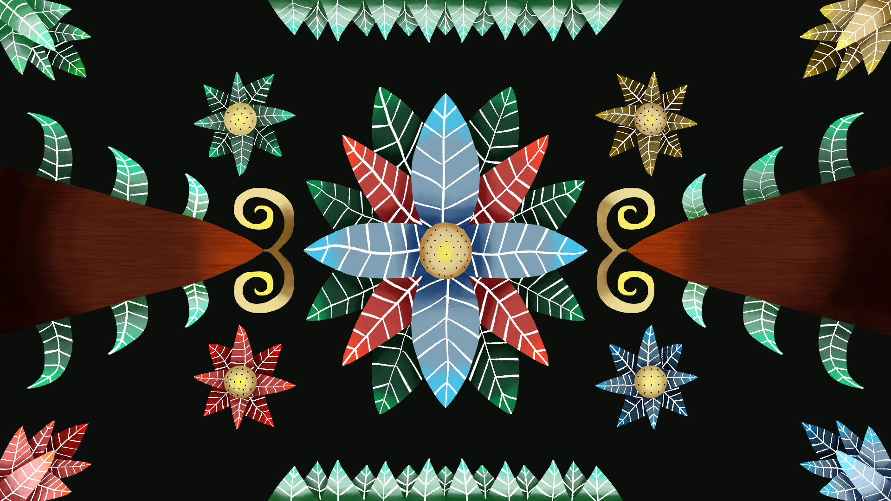
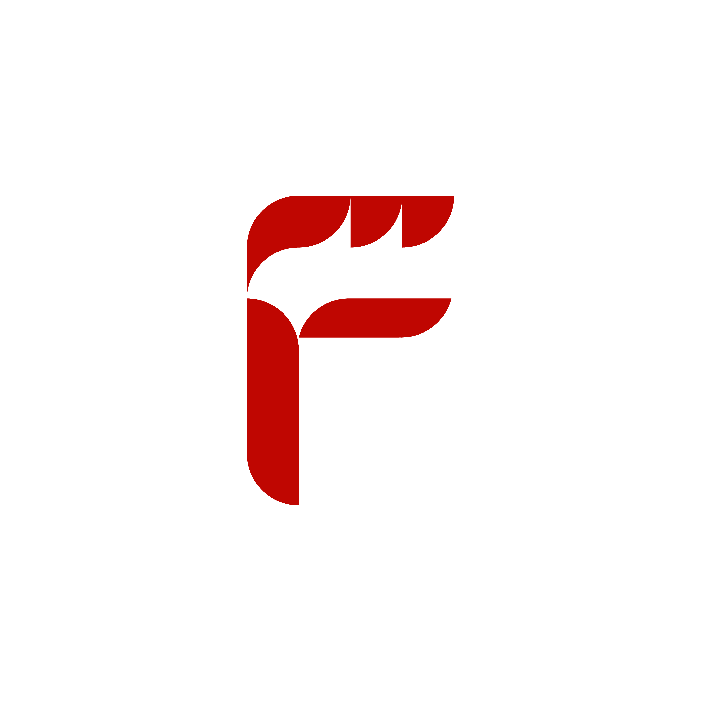
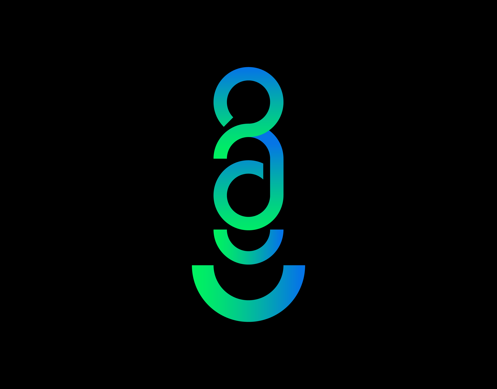
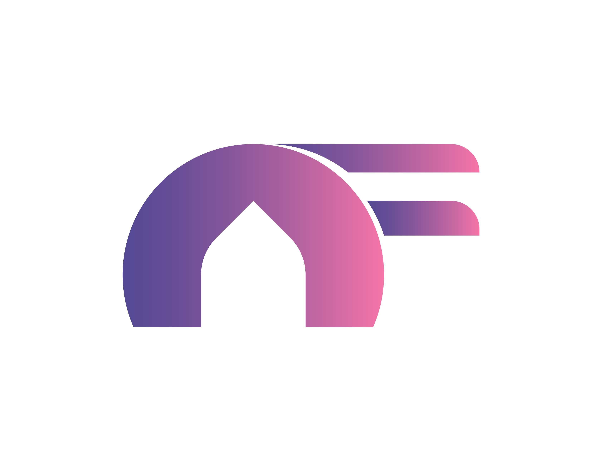

Portfolio

Poster Budak Sampah adalah hasil dari partisipasi saya dalam kegiatan lomba
seni yang
diselenggarakan oleh OSIS SMK Negeri 2 Bandung. Lomba tersebut mengajukan berbagai tema, dan saya
memilih untuk fokus pada isu lingkungan. Untuk membuat poster ini, saya memanfaatkan software
Blender untuk proses pembuatan, kemudian melakukan compositing menggunakan Adobe Photoshop.
Alhasil, poster tersebut membawa saya meraih posisi juara 3 dalam acara tersebut.

Ilustrasi Ragam Hias Flora adalah proyek ilustrasi yang ditujukkan untuk Komunitas Pencinta
Tanaman
Bandung. Komunitas Pencinta Tanaman Bandung adalah sebuah komunitas bagi warga Bandung yang
mencintai berbagai
jenis tanaman. Saat pembahasan proyek, klien meminta saya untuk
menggunakan simbol dari empat musim (musim semi, musim panas, musim gugur, dan musim dingin)
sebagai
representasi keanekaragaman tanaman—jenis tanaman berdasarkan musim. Setelah diskusi, saya
memberikan solusi berupa penggunaan simbol warna atau ilustrasi tanaman berdasarkan musim. Klien
juga memilih berdasarkan simbol warna dan sketsa yang disediakan.

Fovin merupakan branding makanan pedas. Keunikan dari Fovin ialah harganya terjangkau.
Sebelumnya hanya menjual produk keripik namun sekarang menjual makanan lainnya seperti seblak maupun
ayam goreng.

Logo Barbarians. Barbarians merupakan nama kelas atau nama pengganti dari kelas X TKI 6 - SMK Negeri 2 Bandung.

Logo Nikka Festival